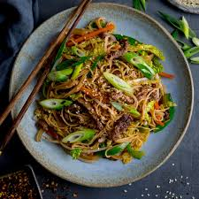

Chinese Beef Chow Mein Recipe

Love Greasy Food? Want Chinese Take-out at home? Here is a quick easy recipe for making Beef Chow Mein in your house.
Ingredients:
- 150 g (5.3 oz) dried chow mein noodles
- 3 tbsp sunflower oil
- 300 g (10.5 oz) thin sirloin, skirt or flank steak
- ¼ tsp garlic salt
- ½ tsp black pepper
- 1 small onion
- 2 cloves garlic
- 1 carrot
- ½ green bell pepper
- ¼ savoy cabbage
- 100 g (3.5 oz) beansprouts
- 1 tbsp cornflour
- 2 tbsp dark soy sauce
- 1 tbsp Chinese rice wine
- 2 tbsp kecap manis (sweet soy sauce)
- 2 tbsp hoisin sauce
- 90 ml (⅓ cup) beef stock
- 1 tbsp sesame oil
- ¼ tsp white pepper
Steps:
- First we cook the noodles, then drain and rinse under cold water to stop the noodles sticking together.
- Make up the chow mein sauce next. We simply mix the ingredients together in a bowl, but be sure to mix the
cornflour (cornstarch) into the other sauce ingredients BEFORE adding the beef stock.
- Slice the steak into thin strips and season with garlic salt and black pepper, then fry in hot oil for a few minutes,
until browned. Then remove from the pan/wok.
- Now we fry the vegetables in the wok in a little oil - onions, garlic, carrot, green pepper, cabbage and beansprouts.
- Add in the cooked steak strips, the noodles and the chow mein sauce and toss it all together using a set of tongs until everything
is hot and the sauce clings to the noodles and vegetables.